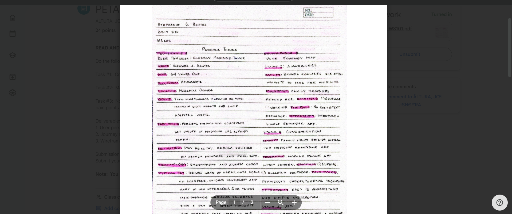
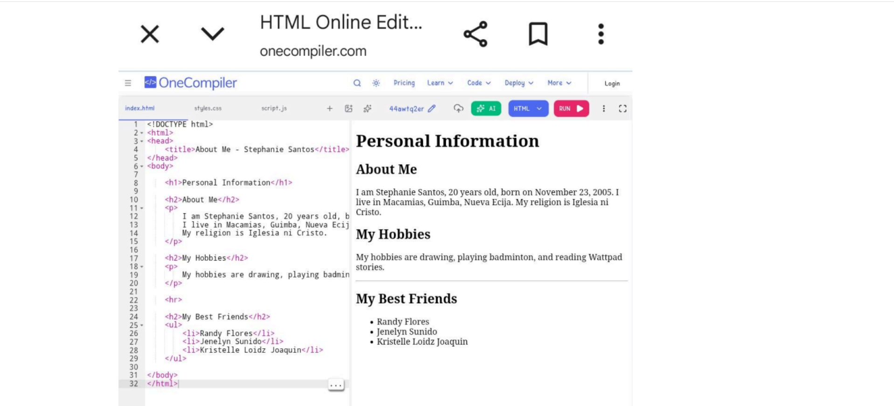
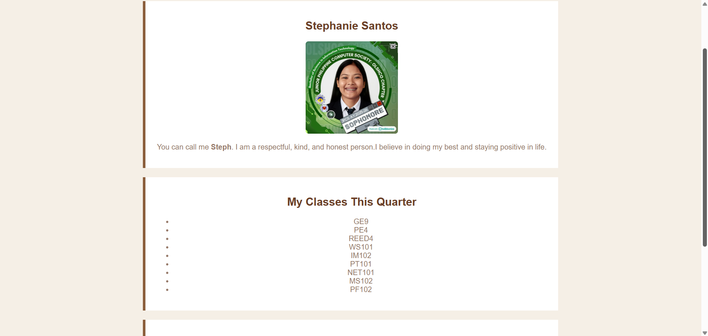
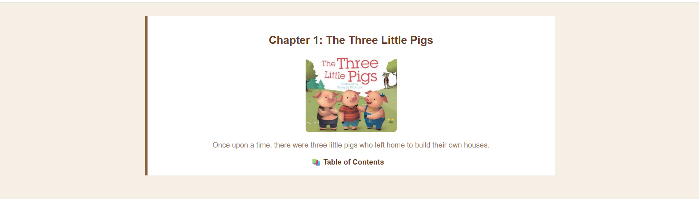

Stephanie Santos
Stephanie Santos
Stephanie Santos
Stephanie Santos

For this project, I created a persona for an elderly medicine tracker to better understand the needs and challenges of older users. I also developed a user journey map to visualize how they interact with a medicine reminder app, and designed a wireframe to present a simple, user-friendly interface that supports their daily medication routine.
View Task 1
In this project, I created a plain static webpage using HTML. It presents my personal information, classes and subjects for this quarter, and my daily moods in a simple and organized layout. The page also includes a section about my best friend, making it more personal and meaningful.
View Task 2
In this project, I created an HTML and CSS webpage that is more interactive and visually appealing. It showcases my personal information, classes and subjects for this quarter, and my daily moods. There is also a section about my best friend, giving the page a more personal and lively touch.
View Task 3
This project I developed a home page and story pages for the tale of “The 3 Little Pigs.” Each chapter has its own page, and there is a table of contents for easy navigation. The project combines storytelling and web design into a clean and simple presentation.
View Task 4